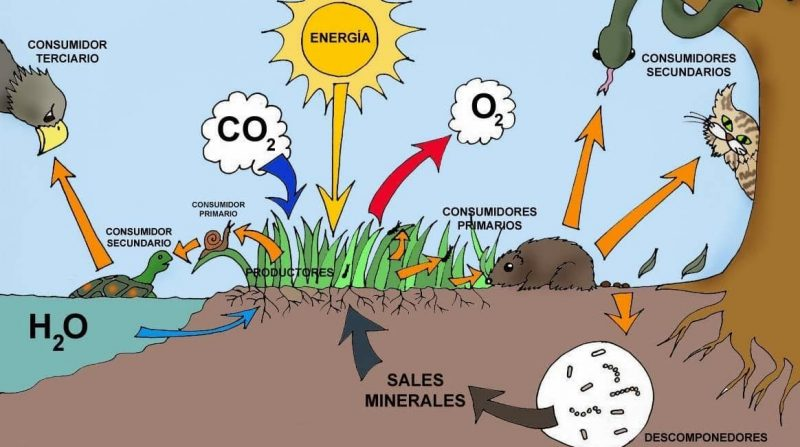

La biología es una ciencia que estudia el origen, la evolución y las características de los organismos, sus procesos de vida, comportamientos y sus interacciones entre sí y con el medio ambiente. Tales palabras se componen de la etimología griega βίος (bíos) (que significa "vida") y -λογία (-logía) (que significa "ciencia" o "investigación"). Por tanto, la biología se encarga de describir e interpretar los comportamientos y características del ser humano, ya sea como individuo o en su conjunto, se le considera una especie.
Seres Vivos Los seres vivos son todos aquellos que tienen vida, como lo somos nosotros los seres humanos y los animales y plantas, ellos ejecutan una serie de funciones que les permiten mantenerse con vida en el lugar donde se pudieron adaptar y tomar como hábitat. |
Seres Inertes Seres inertes Naturales Son que son todos aquellos conformados por la naturaleza. Es el caso de las rocas, el agua, el aire, etc. Seres inertes artificiales Son aquellos que tienden, haber sido fabricados por seres humanos. |
Ecosistema
es un sistema que está formado por un conjunto de organismos, el medio ambiente físico en el que viven (hábitat) y las relaciones tanto bióticas como abióticas que se establecen entre ellos. Las especies de seres vivos que habitan un determinado ecosistema interactúan entre sí y con el medio, determinando el flujo de energía y de materia que ocurre en ese ambiente.
Existe una gran diversidad de ecosistemas en el planeta. Todos están formados por factores bióticos (seres vivos) y factores abióticos (elementos no vivos, como el suelo o el aire). Existen además, distintos tipos de ecosistemas: hay marinos, terrestres, microbianos y artificiales